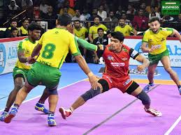

Kabbadi
- What is Kabbadi ?
-
Kabaddi is a contact team sport played between two teams
of seven players, originating in ancient India.[4] The objective of the
game is for a single player on offence, referred to as a "raider", to
run into the opposing team's half of the court, touch out as many of
their players as possible, and return to their own half of the court,
all without being tackled by the defenders in 30 seconds. Points are
scored for each player tagged by the raider, while the opposing team
earns a point for stopping the raider. Players are taken out of the game
if they are touched or tackled, but return to the game after each point
scored by their team from a tag or tackle.

Kabbadi Rules
- Kabbadi rule 1
-
Player :
Each team has 8 players in Punjab style kabaddi, and the game is played
on a circular pitch. In the Pro Kabaddi League, teams can have 14
players on their squad for each game.
kabbadi rule 2
Pitch :
The mat is divided into two halves by a mid line, and there are two lines
parallel to the mid line in each half. The baulk line is 3.75 meters from
the mid line, and the bonus line is 1 meter further back
kabbadi rule 3
Objective :
The raider's objective is to tag or touch as many opposition players as
possible without being caught or taking a breath. Defenders try to stop
the raider from returning to their own half.
kabbadi rule 4
scoring :
The opposite team earns a point if the raider is successfully stopped
(tackled). All players tagged are taken out of the game, but one is
"revived" for each point a team scores from a subsequent tag or tackle.
kabbadi rule 5
Other rules :
If a team gets all seven players on the opposing team out ("All Out"),
they earn two additional points. Players who step out of the boundary are
out
Requirements
- Players
- ground
- refery